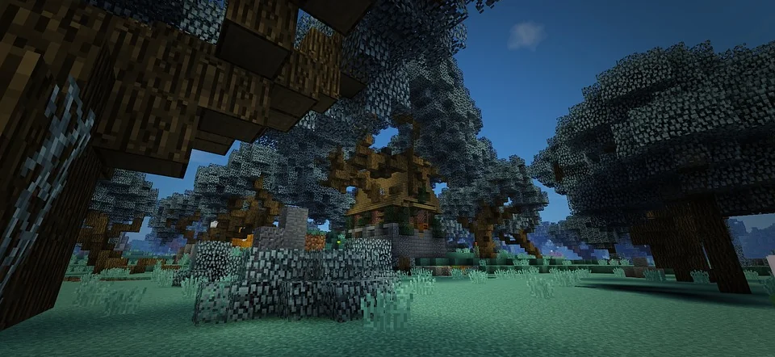

Survival World / Ongoing
Monkey Land Current Survival World

Welcome to my personal survival world. This page documents its journey through new builds, memorable milestones, update logs, and downloadable versions as the world continues to evolve.
About this world
This world began around 2021 as a personal challenge called Underground Survival. The rules were simple: I had only 10–15 minutes of real time above ground to gather basic resources. Once that time was up, I could never return to the surface again. From that point on, everything had to be built, explored, and earned underground.
At the same time, I wanted something my previous survival world wasn't—a world where absolutely no cheats would ever be used. From the day this world was created, I made a promise that every block, every item, and every achievement would be earned legitimately. Years later, that promise still stands.
The challenge eventually grew into something much bigger. While my original underground hobbit hole is long gone, it laid the foundation for the world that exists today. My current home is a three-level underground base, one of the oldest surviving parts of the world and the center of nearly every project I've built since.
Over the years, the world has continued to evolve. One of the biggest transformations was completely flattening the mountains and plains above my base to create space for future builds. I'm especially proud of my Deepslate Mansion and the Balloon Fiesta inside Monkey Park.
I don't follow a strict building plan or roadmap. This world grows naturally, with each new project reflecting whatever inspires me at the time. There is always another area to explore, another build to improve, or another idea waiting to become reality.
More than anything, this world represents my growth as a Minecraft player. If there's one thing I hope visitors notice while exploring, it's how the world has changed over the years and how every area tells a different part of that journey—all built in survival, with no cheats ever used.
World Preview
Screenshots will live here
The boxes below show how the real world screenshots will be presented.
Update Log
First Snapshot
- Snapshot details will be added when the first world download is ready.